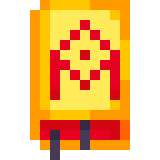
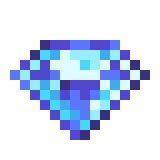

Esencja z Morexa -> Esencja z Morex
Death Spellbook -> Księga Śmierci
Life Spellbook -> Księga Życia
Pustynna Kula -> Kula Pustyni
Sklepowa Kula -> Kula Sklepu
Młotek
"Zwykły bezużyteczny młotek" ->
"Niezbędny element przy wytwarzaniu przedmiotów."
Złota Moneta
"Super rzadki przedmiot, kt?ry możesz wymienić na 1 monetę" ->
"Zwyczajna Moneta, którą można znaleźć wszędzie, ale w formie przedmiotu. Kto to wymyślił???"
Pakiet Premium
"Pakiet Premium, który otrzymujesz po zdobyciu premium." ->
"Pakiet zawierający kilka wyjątkowych przedmiotów. Otrzymywany poprzez zakup premium."
Kamień
"Kamień" ->
"Pospolity przedmiot możliwy do znalezienia podczas kopania oraz składnik podstawowych przedmiotów."
Piach
"Piach" ->
"Materiał możliwy do znalezienia na Pustyni oraz może zostać przetopiony, aby utworzyć Szkło."
Banknot
"Kasa" ->
"Waluta powszechnie używana w południowo-wschodnim Erimie, ale w Zatoce Cetreskiej jest bezużyteczna."
Zielona Esencja
"Esencja z zielonego slime'a" ->
"Esencja życiowa pochodząca z Zielonego Slime'a. Nie ma zbyt dużej wartości, bo w odróżnieniu od innych esencji nie można jej użyć do utworzenia jakiejkolwiek mikstury."
Niebieska Esencja
"Esencja z niebieskiego slime'a" ->
"Esencja życiowa pochodząca z Niebieskiego Slime'a. Niezbyt przydatny komponent alchemiczny, bo można dzięki niemu utworzyć miksturę powodującą świąd."
Różowa Esencja
"Esencja z różowego slime'a" ->
"Esencja życiowa pochodząca z Różowego Slime'a. Bardzo pożądany, gdyż jest ważnym składnikiem Mikstury Regeneracji oraz wielu innych mikstur."
Złota Esencja
"Esencja ze złotego slime'a" ->
"Esencja życiowa pochodząca ze Złotego Slime'a. Ciężki do zdobycia komponent alchemiczny wzmacniający mikstury powodujące szkodę."
Esencja z Morex
"Esencja z Morexa" ->
"Esencja życiowa pochodząca z Morex. Pożądany przez najsilniejszych czarodzieji, gdyż przedmiot nie został zbadany i nie znany jest jego potencjał."
Test Sword
"Legendarny Miecz z zamierzchłych czasów przed wersj ą 2.0" ->
"Mityczny Miecz, który zgodnie z legendą dzierżył twórca mieczy dawno temu zanim odkryto Pierwotnego Slime'a."
Drewniany Miecz
"Pospolity drewniany miecz." ->
"Podróbka pożądnego miecza, którą można kupić tanio w sklepie. Producent nie zaleca używania jej do walki oraz nie ponosi odpowiedzialności za jakiekolwiek urazy."
Róg Morex
"None" ->
"Róg pochodzący z Morex. Nikomu nie udało się go zbadać. Mimo tego niektórzy wierzą w to, że jeśli zadmie się w niego to przybędzie armia slime'ów walczących po twojej stronie."
Złota Korona
"None" ->
"Korona noszona przez władców, jak i Złotego Slime'a. Nikt nie wie, dlaczego tylko ten rodzaj slime'a nosi coś ludzkiego."
Zwykła Skrzynia
"Zwykła skrzynia z pospolitymi przedmiotami" ->
"Łatwa do znalezia skrzynia zawierająca kilka podstawowych przedmiotów oraz w rzadkich przypadkach Diamenty. Kto je tam zostawił???"
Żelazny Kilof
"Pokop na **/dig**" ->
"Ten sam model kilofa używany przez ludzi w całym Erimie. Jakoś nikt nie widzi możliwych zalet z posiadania lepszego kilofa, bądź innego narzędzia zdolnego kopać."
Ruda Żelaza
"None" ->
"Ruda możliwa do znalezienia na nieco głębszych warstwach podziemi. Przetopienie jej nie wymaga zbyt wiele wysiłku."
Żelazo
"None" ->
"Metal, który każdemu wala się po domu. Z powodu łatwości zdobycia jego jest używany w każdej dziedzinie życia."
Prototyp Morkour
"Nieudany prototyp" ->
"Nieudana broń utworzona przez Prachda Tagkoura, symberskiego naukowca. Miecz utworzony z diamentowej klingi oraz żelaznej rękojeści oraz jelca. Broń stała się przeklęta poprzez dodanie skondensowanej Różowej Esencji jako klejnotu oraz przez wzmocnienie ostrza przez wykorzystanie Rogu Morex. Sam Tagkour został zabity tym prototypem. Zamachowiec nie jest znany do dziś."
Drewno
"None" ->
"Łatwy do znalezienia surowiec w lesie. Wraz z Kamieniem jest wykorzystywany do budowy prawie każdego budynku w Imperium Semerskim."
Ziemia
"None" ->
"Przedmiot istniejący w prawie każdym kraju. Nie ma żadnego zastosowania, oprócz tego, że rosną w niej rośliny."
Węgiel
"None?" ->
"Używany jest do przetapiania średnio wymagających materiałów. Można go wykopać dosyć łatwo, gdyż występuje tuż pod warstwą Ziemi."
Kamienny Miecz
"cos tu wpisze jak bedzie mi sie chcialo" ->
"Broń dzierżona przez początkujących wojowników oraz niewprawionych poszukiwaczy. Miecz nie tyle co jest ostry, co ciężki. Prawdę mówiąc ta broń jest tępa."
Żelazny Miecz
"cos tu wpisze jak bedzie mi sie chcialo" ->
"Broń mimo lepszego wykoniania od Kamiennego odpowiednika, nie jest dużo silniejsza od niego. Najpopularniejszy wybór wśród amatorskich wojowników i poszukiwaczy."
Diamentowy Miecz
"cos tu wpisze jak bedzie mi sie chcialo" ->
"Broń używana przez zawodowych wojowników oraz poszukiwaczy. Miecz jest wytapiany z domieszką Żelaza i Złota."
Test Spellbook
"Magiczna ksiazka 3w1 aby zaoszczedzic koszty produkcji" ->
"Pierwsza udana księga zaklęć wytworzona przez człowieka. Jej twórca Kerim Morex zdecydował się ją zniszczyć, bo była zbyt potężna. Mimo tego jedna istota wciąż ją posiada."
Księga Śmierci
"Nanomachines Son" ->
"Przeklęta księga zaklęć stworzona przez czarodzieja, który chciał osiągnąć nieśmiertelność poprzez branie życia z innych istot. Nie spodziewał się, że księga kiedyś zabierze całe jego życie."
Księga Życia
"Let your country control your mind" ->
"Magiczna księga stworzona przez uzdrowiciela, aby magowie łatwo mogli się leczyć podczas walki. Wiedza jak ją utworzyć przepadła razem z uzdrowicielem."
Ruda Złota
"None" ->
"Ruda, którą można najłatwiej znaleźć na Pustyni. Przetopienie jej nie wymaga wielkiego wysiłku."
Złoto
"None" ->
"Metal uważany za wartościowy. Używany jest do produkcji biżuterii oraz monet. Tylko bankierzy wiedzą jak wytworzyć z tej sztabki Złote Monety."
Ruda Diamentu
"None" ->
"Ruda, którą można znaleźć głęboko w podziemiach. Przetopienie jej wymaga średniego wysiłku."
Diament
"None" ->
"Kryształ z szeroką gamą zastosowań. Wykorzystywany do tworzenia broni, biżuterii oraz magii."
Rzadka Skrzynia
"Rzadka skrzynia z rzadkimi przedmiotami" ->
"Skrzynia zawierająca przedmioty związane z górnictwem. Dawana jest żebrakom, aby odeszli."
Jabłko
"None" ->
"Owoc możliwy do znalezienia w lesie. Pożądany przez matki, gdyż ten owoc jest ulubieńcem wśród dzieci."
Rubin
"None" ->
"Kryształ możliwy do znalezienia na Pustyni. Jest bardzo wartościowy ze względu jego właściwości magiczne. Większość dochodu Królestwa Pustynnego pochodzi z eksportu Rubinów."
Mikstura Regeneracji
"None" ->
"Mikstura odnawiająca życie podczas walki. Jest dosyć słaba, aby można było ją legalnie sprzedawać w sklepie oraz oszczędzić na kosztach produkcji."
Szczypce Skorpiona
"None" ->
"Pochodzą z Pustynnych Skorpionów. Ich cena mocno spadła z powodu ich plagi po III Wojnie Królewskiej."
Kaktus
"None" ->
"Jedna z niewielu roślin rosnących na Pustyni. Niektórzy próbowali wykorzystać fakt, że Kaktusy kłują, aby utworzyć broń. Oni zaginęli w niewiadomych okolicznościach."
Złoty Miecz
"cos tu wpisze jak bedzie mi sie chcialo" ->
"Broń wykorzystywana w wielu pojedynkach oraz jako dekoracja. Wytwarzana jest z dodatkiem Żelaza."
Mapa
"None" ->
"Mapa pokazująca obecne granice państw w Zatoce Cetreskiej."
Kula Pustyni
"None" ->
"Magiczna kula odblokowywująca dostęp do Pustyni. Znika po użyciu."
Szkło
"None" ->
"Otrzymywane jest w przetapiania Piachu w Piecu. Używane do tworzenia magicznych kul oraz okien."
Pustynny Kryształ
"None" ->
"Wbrew nazwie, nie występuje na Pustyni. Można go znaleźć leżącego gdzieś w Lesie. Wykorzystywany do utworzenia Kuli Pustyni."
Kryształ Pustki
"None" ->
"Kryształ możliwy do znalezienia w Pustce. Nikt nie wie czemu on tam jest. Nikt nie wie czym jest Pustka. Jeśli Pustka jest Pustką to czemu tam jest ten Kryształ?"
Fragment Metalu
"None" ->
"Fragment pochodzący z maszyny Kusela Skarrda. Mama mówiła mu, aby porzucił marzenia o byciu twórcą maszyn oraz by skupił się na rodzinnym sklepiku w Lesie."
Zegarek ⚪ Pospolity -> 🟢 Niepospolity
Młotek ⚪ Pospolity -> 🟢 Niepospolity
Placeholder 🟡 Legendarny -> 🔴 Mityczny
Kamień 🟢 Niepospolity -> ⚪ Pospolity
Piach 🔵 Rzadki -> 🟢 Niepospolity
Banknot 🟣 Epicki -> 🔵 Rzadki
Zielona Esencja ⚪ Pospolity -> 🟢 Niepospolity
Niebieska Esencja 🔵 Rzadki -> 🟢 Niepospolity
Różowa Esencja 🟣 Epicki -> 🔵 Rzadki
Test Sword 🟡 Legendarny -> 🔴 Mityczny
Drewniany Miecz ⚪ Pospolity -> 🟢 Niepospolity
Trofeum Wielkanocne 2023 🟣 Epicki -> 🟡 Legendarny
Test Bundle 🟡 Legendarny -> 🔴 Mityczny
Zwykła Skrzynia ⚪ Pospolity -> 🟢 Niepospolity
Żelazny Kilof 🔵 Rzadki -> 🟢 Niepospolity
Węgiel ⚪ Pospolity -> 🟢 Niepospolity
Kamienny Miecz 🔵 Rzadki -> 🟢 Niepospolity
Test Spellbook 🟡 Legendarny -> 🔴 Mityczny
Ruda Złota 🔵 Rzadki -> 🟣 Epicki
Złoto 🔵 Rzadki -> 🟣 Epicki
Mikstura Regeneracji 🔵 Rzadki -> 🟢 Niepospolity
Kaktus ⚪ Pospolity -> 🟢 Niepospolity
Mapa ⚪ Pospolity -> 🟢 Niepospolity
Pustynna Kula 🔵 Rzadki -> 🟣 Epicki
Fragment Metalu 🟣 Epicki -> 🔵 Rzadki
Trofeum Wielkanocne 2024 🟣 Epicki -> 🟡 Legendarny
Zegarek 1500 -> 10000
Młotek 1000 -> 7500
Drewniany Miecz 1500 -> 15000
Żelazny Kilof 2500 -> 20000
Drewno 1000 -> 0
Chleb 800 -> 5000
Mikstura Regenracji 0 -> 6250
Mapa 750 -> 2500
Trofeum Wielkanocne 2024 10000 -> 0
Zegarek 750 -> 500
Młotek 100 -> 350
Piwo 250 -> 330
Kamień 0 -> 20
Piach 15 -> 25
Banknot 300 -> 550
Zielona Esencja 30 -> 15
Niebieska Esencja 150 -> 50
Różowa Esencja 350 -> 200
Złota Esencja 575 -> 350
Esencja z Morex 1500 -> 1000
Róg Morex 0 -> 7500
Żelazo 325 -> 250
Drewno 55 -> 10
Ziemia 20 -> 15
Złoto 200 -> 300
Rubin 250 -> 350
Szczypce Skorpiona 0 -> 120
Szkło 50 -> 35
Złota Moneta Nie -> Tak
Pakiet Premium Nie -> Tak
Kamienny Miecz Nie -> Tak
Żelazny Miecz Nie -> Tak
Diamentowy Miecz Nie -> Tak
Złoty Miecz Nie -> Tak
Księga Śmierci
Diament
Atak
Żelazny Miecz [40, 45, 35] -> [35, 40, 30]
Złoty Miecz [30, 35, 25] -> [40, 45, 35]
Urodzinowy Balon
{"type": "ammo", "itemtype": "gun", "attack": [40, 45, 35], "cursed": "n"} -> "n"
Las
Szansa pojawienia się Monet 🔻 50% -> 49.9%
➕ 1 Kryształ Pustyni 0.1% 2-3 XP
Dodano Pustynię
33.33% Nic
26.67% Monety
25% 1 Piach 2-3 XP
8.9% 1 Kaktus 1-4 XP
6% Handlarz
1% Piramida
0.1% 1 Złoto 3-5 XP
Handlarz - Roman
Można zakupić 3 razy
Oferta:
| Cena | Przedmiot |
| 1 Kaktus | 1 Piach |
| 3 Szczypce Skorpiona | 1 Złoto |
| 5 Złota | 1 Ruda Żelaza |
| 2 Złota | 1 Banknot |
| 15 Rubinów | 1 Złoty Miecz |
| 30 Rubinów | 1 Księga Śmierci |
Struktura - Piramida
Poziom Zagrożenia: 2
Wrogowie:
-Skorpion
-Żelazny Skorpion
-Złoty Skorpion
Zwykła Skrzynia:
- Monety 69-213
- Piach 3-7
- Złoto 0-2
Skarb:
- Monety 69-420
- Rubin 1-2
- Złoto 2-5
Sklep powinien od teraz pokazywać rzeczywisty stan przedmiotów do kupienia
Informacje Beta -> Informacje Deweloperskie
StareID -> SID
Dodano informacje do przedmiotów przetapialnych
Informacje Beta -> Informacje Deweloperskie
Nowa receptura
Złoty Miecz:
- 15 Złota
- 3 Żelaza
- 10 Drewna
- 1 Młotek
- Naprawiono błąd związany z łączeniem się custommobs.json z settings.json jeśli użytkownik nie miał utworzonego konta na custommobs.json
- Usunięto podwójną spację po emotce przy Trofeum Wielkanocnym 2022
- Naprawiono małą literę przy Szczypcach Skorpiona